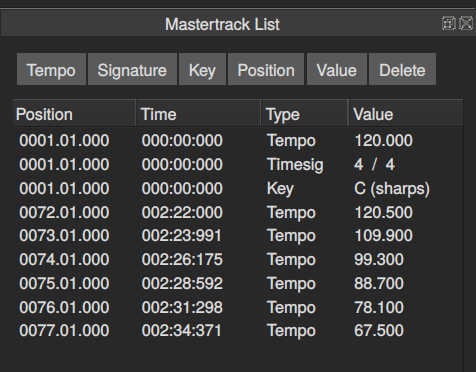
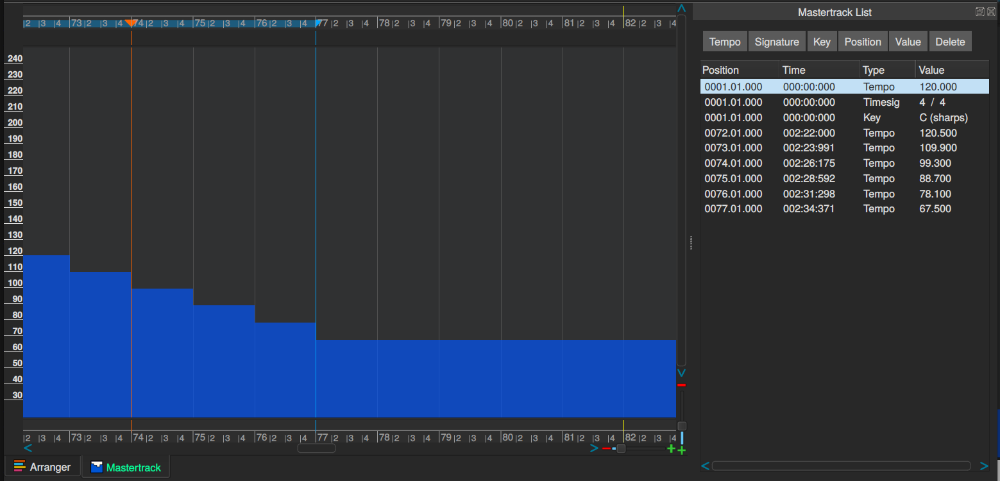

Mastertrack editor(s)
The mastertrack contains tempo, time signature and key of your song. All of these can be changed to your liking at any point during the song. There are two mastertrack editors, the List editor and the Graphical editor.

This example shows the Mastertrack list editor with all parameters initially set at the beginning of the song but also a number of tempo changes later on.
The buttons at the top of the dialog can be used to modify the entries. Double clicking can also be used to achieve the same thing.

Here is the same example but the Mastertrack graphical editor is also shown. A tempo ramp where the song slows down, has been made with the drawing tool.
A common beginners mistake is that tempo changes have been added to the mastertrack by mistake. This can be remedied by selecting the offending line in the Mastertrack list editor and clicking the Delete button.